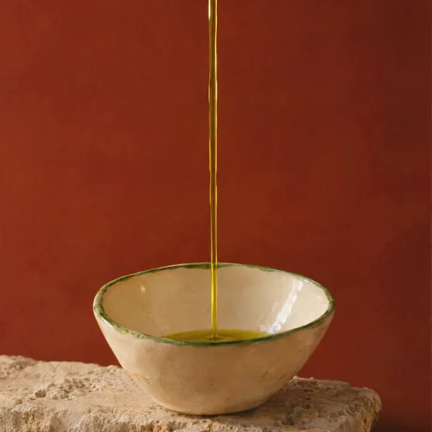
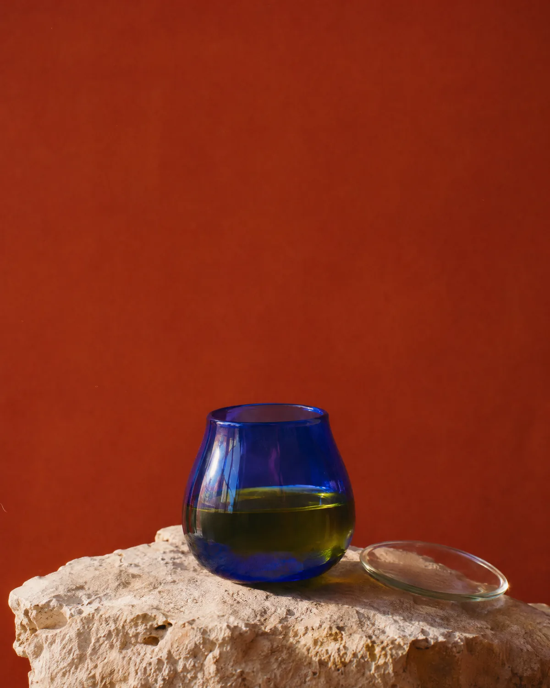
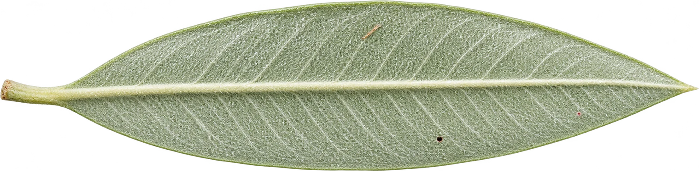
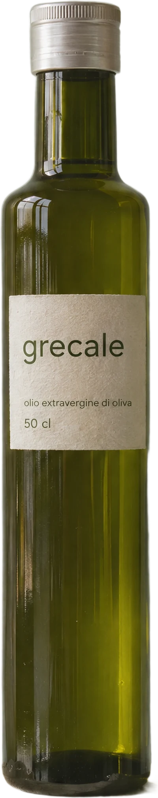
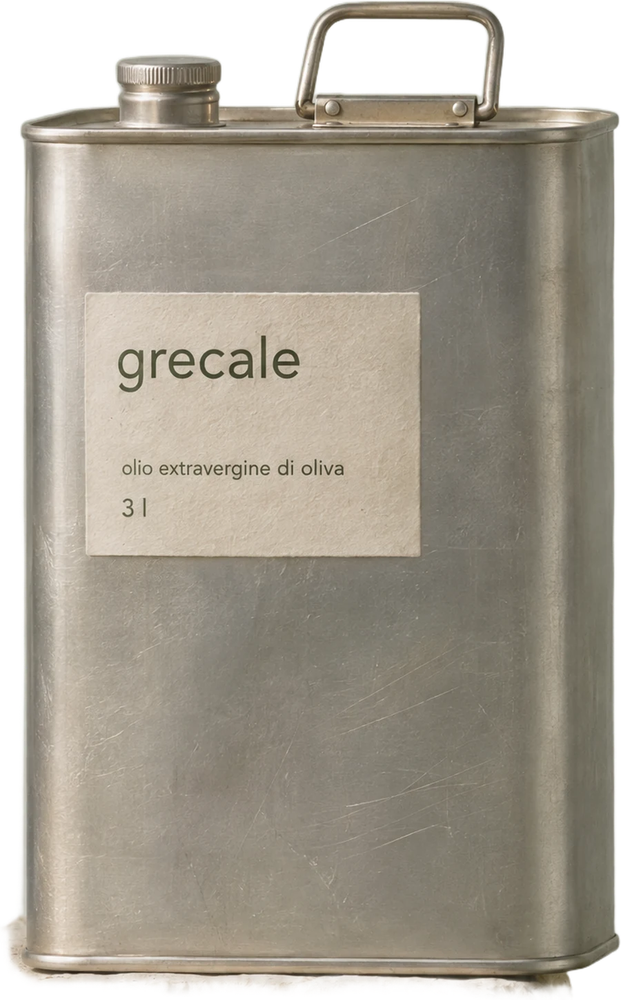
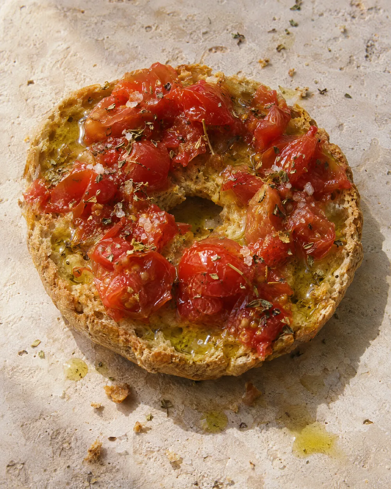
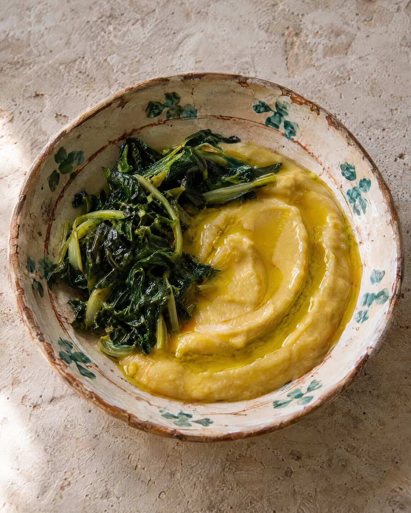
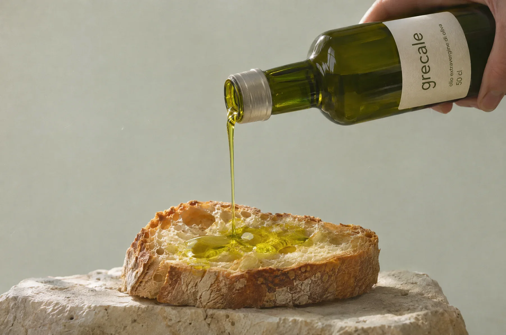

Grecale
Olio extravergine di oliva
Coratina, Puglia
Scorri
Amaro,
poi pizzica.
La coratina prende il nome da Corato, in Puglia: dà un olio ricco di polifenoli, con amaro e piccante decisi.
Il pizzico in gola dell’olio appena franto si deve all’oleocantale.

Il rovescio
della foglia
Sopra, la foglia d’ulivo è verde-grigia. Sotto è quasi argentata: la coprono minuscoli peli a forma di scudo, che la proteggono dai raggi UV-B.



Grecale
Olio extravergine di oliva da sola coratina. Estratto a freddo, cioè sotto i 27 °C.
Conservalo al riparo da luce e calore: il vetro scuro e la latta lo proteggono dalla luce.
A crudo
-
Frisa
Pane biscottato pugliese: si bagna in acqua e si condisce con pomodoro e olio extravergine.

-
Fave e cicorie
Purea di fave secche con cicorie selvatiche lessate, e olio extravergine sopra.

-
Pane e olio
Una fetta di pane di grano duro e un filo d’olio appena franto.
